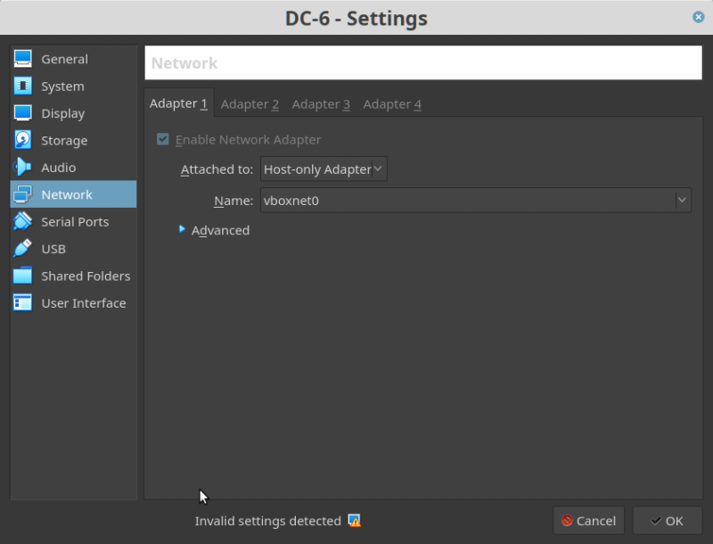
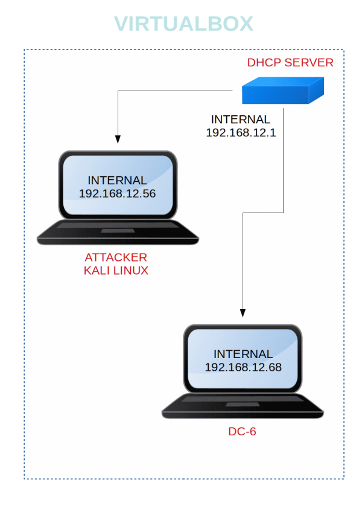
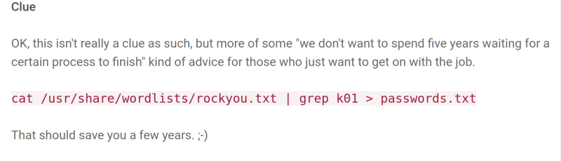

DC-6
▸ DC-6
▸ 1. Scan Network
▸ 2. Finding Services and Ports
▸ 3. Enumerate
▸ 3.1 Wpscan
▸ 4. Exploit
▸ 4.1 Log in WordPress
▸ 4.2 Search an exploit
▸ 4.3 Open a netcat shell
▸ 5. Privilege Escalation
▸ 5.1 Connect via SSH
▸ 5.2 Change user
▸ 6. Catch the flag
Difficulty: Beginner.
Flag: 1 flag.
Learning:
• Netdiscover
• Nmap
• Wpscan
• Searchsploit
• sudo rights
• Download: http://www.five86.com/downloads/DC-6.zip
• Download (Mirror): https://download.vulnhub.com/dc/DC-6.zip
• Download (Torrent): https://download.vulnhub.com/dc/DC-6.zip.torrent
Install the machine on VirtualBox:
1. Download the file and extract it.
2. On Virtualbox choose File->Import Appliance.
3. Select the file “ova”.
4. Accept to import.


Watch your Machine IP.
Output:

Diagram

HINT
The author has left a clue which will be helpful in this CTF. If you visit his site https://www.five86.com/dc-6.html you'll see the following warning:

cat /usr/share/wordlists/rockyou.txt | grep k01 > passwords.txt
 Index
Index